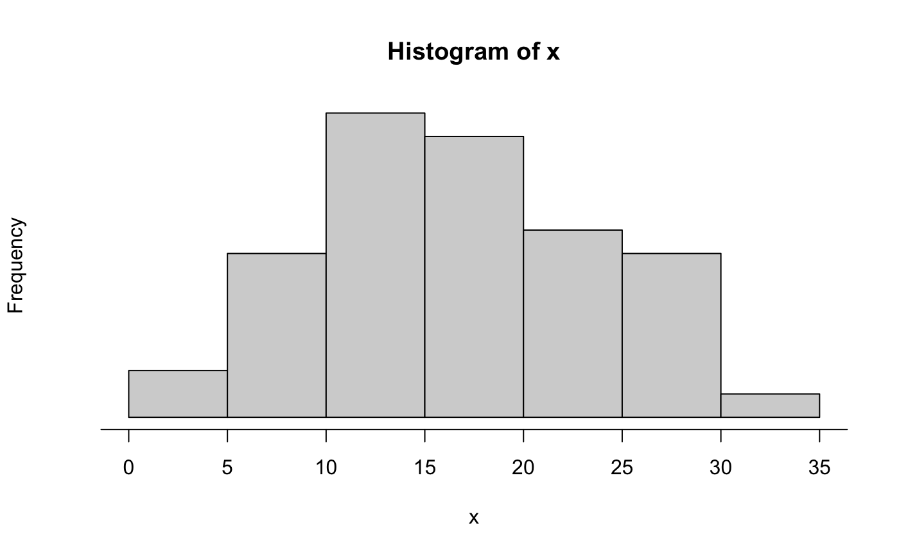

Axis function substitute
buildAxis.RdThe function buildAxis is built to provide more control of the number
of labels on the axis. This function is still under development.
buildAxis(side, limits, n, nMin = 2, nMax = 10, extend = 2, eps = 10^-12, ...)
Arguments
| side | The side of the plot where to add the axis. |
|---|---|
| limits | Either lower and upper limits on the axis or a data set. |
| n | The preferred number of axis labels. |
| nMin | The minimum number of axis labels. |
| nMax | The maximum number of axis labels. |
| extend | How far the axis may extend beyond |
| eps | The smallest increment allowed. |
| … | Arguments passed to |
Value
A vector of the axis plotted.
Details
The primary reason behind building this function was to allow a plot to be
created with similar features but with different data sets. For instance, if
a set of code was written for one data set and the function axis had
been utilized with pre-specified values, the axis may not match the plot of
a new set of data. The function buildAxis addresses this problem by
allowing the number of axis labels to be specified and controlled.
The axis is built by assigning penalties to a variety of potential axis setups, ranking them based on these penalties and then selecting the axis with the best score.
See also
Examples
buildAxis(1, limits, 2, nMax=4)#===> 1 <===# x <- seq(0, 500, 10) y <- 8*x+rnorm(length(x), mean=6000, sd=200) plot(x, y, axes=FALSE)buildAxis(1, limits=x, n=5)buildAxis(2, limits=y, n=3)#===> 2 <===# x <- 9528412 + seq(0, 200, 10) y <- 8*x+rnorm(length(x), mean=6000, sd=200) plot(x, y, axes=FALSE)temp <- buildAxis(1, limits=x, n=4)buildAxis(2, y, 3)#===> 3 <===# x <- seq(367, 1251, 10) y <- 7.5*x+rnorm(length(x), mean=6000, sd=800) plot(x, y, axes=FALSE)buildAxis(1, limits=x, n=4, nMin=3, nMax=3)buildAxis(2, limits=y, n=4, nMin=3, nMax=5)#===> 4 <===# x <- seq(367, 367.1, 0.001) y <- 7.5*x+rnorm(length(x), mean=6000, sd=0.01) plot(x, y, axes=FALSE)buildAxis(1, limits=x, n=4, nMin=5, nMax=6)buildAxis(2, limits=y, n=2, nMin=3, nMax=4)#===> 5 <===# x <- seq(-0.05, -0.003, 0.0001) y <- 50 + 20*x + rnorm(length(x), sd=0.1) plot(x, y, axes=FALSE)buildAxis(1, limits=x, n=4, nMin=5, nMax=6)buildAxis(2, limits=y, n=4, nMax=5)#===> 6 <===# x <- seq(-0.0097, -0.008, 0.0001) y <- 50 + 20*x + rnorm(length(x), sd=0.1) plot(x, y, axes=FALSE)buildAxis(1, limits=x, n=4, nMin=2, nMax=5)buildAxis(2, limits=y, n=4, nMax=5)#===> 7 <===# x <- seq(0.03, -0.003099, -0.00001) y <- 50 + 20*x + rnorm(length(x), sd=0.1) plot(x, y, axes=FALSE)buildAxis(1, limits=x, n=4, nMin=2, nMax=5)buildAxis(2, limits=y, n=4, nMax=6)#===> 8 - repeat <===# m <- runif(1)/runif(1) + rgamma(1, runif(1)/runif(1), runif(1)/runif(1)) s <- rgamma(1, runif(1)/runif(1), runif(1)/runif(1)) x <- rnorm(50, m, s) hist(x, axes=FALSE)buildAxis(1, limits=x, n=5, nMin=4, nMax=6, eps=10^-12)